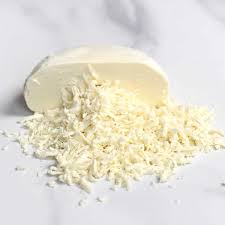
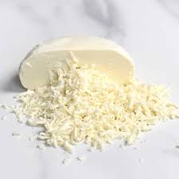
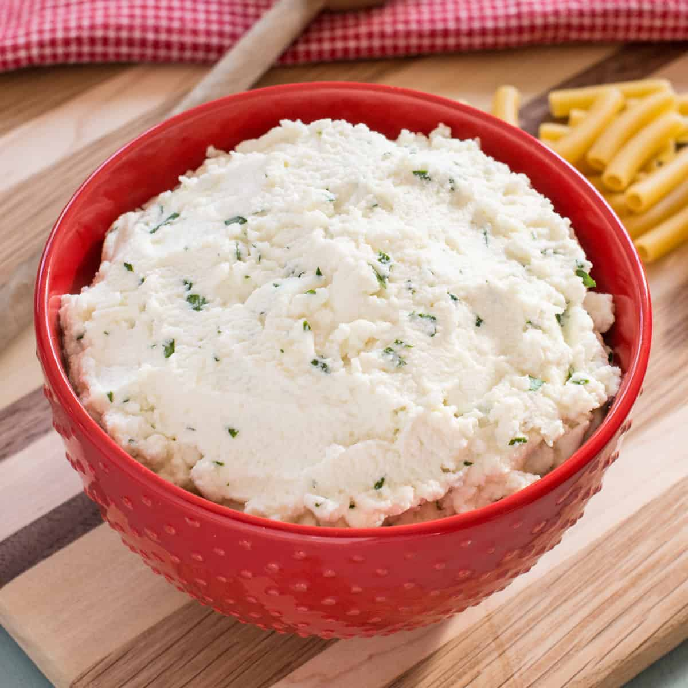

Mozzarella
Mozzarella cheese, whether shredded or in pieces, is an important part of lasagna. It allows for the long strings seen in a cheese pull when taking a bite of lasagna.
Mozzarella cheese, whether shredded or in pieces, is an important part of lasagna. It allows for the long strings seen in a cheese pull when taking a bite of lasagna.
Ricotta cheese is a soft, speadable cheese known for its mild, slightly sweet flavor and creamy, grainy texture, often used as a cheese layer in lasagna ontop of the sauce.
